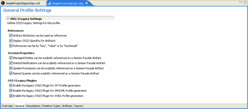

If your organization does not use OSS/J, you may want to disable the settings and plug-ins available by default with Tigerstripe Workbench. Complete the following procedure to disable plug-ins.
To disable plug-ins:
- Click the General tab in your Project Profile Perspective. By default all options are selected.

- Disable the OSS/J Legacy Settings and save your Profile to save your changes.
The OSS/J options are separated into three categories:
- References
- Session Properties
- OSS/J Legacy Plugins
Before your changes become available with your Tigerstripe project, you must deploy your Tigerstripe Profile. For more information about deploying your Tigerstripe Profile, refer to Deploying your Profile.
Profile Perspectives
The Annotation Tab
The Primitive-Type Tab
The Artifacts Tab
Deploying your Profile
Project Profiles
Rolling Back
Loading Factory Defaults